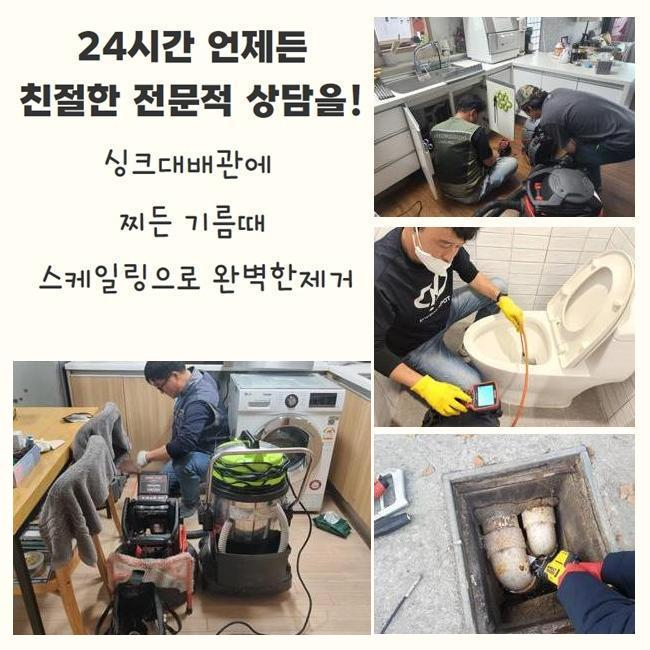
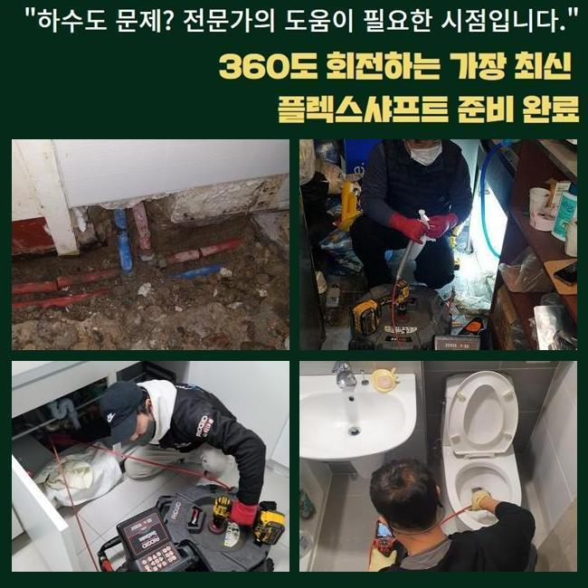
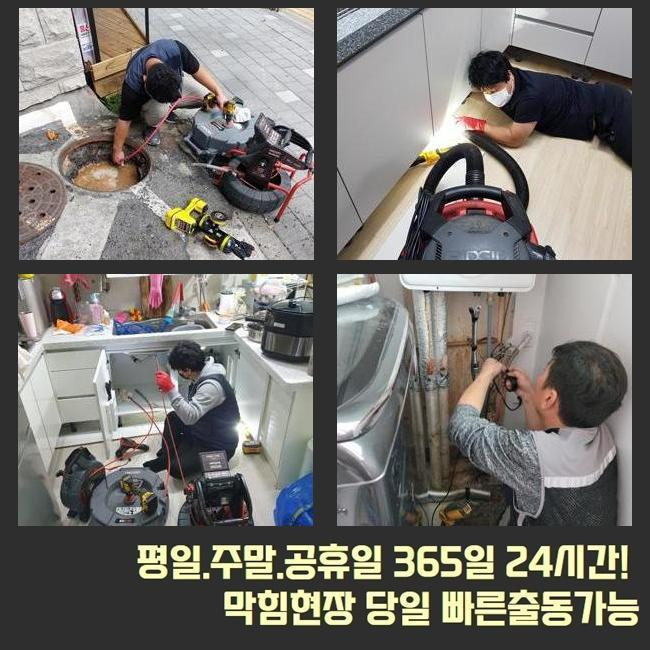
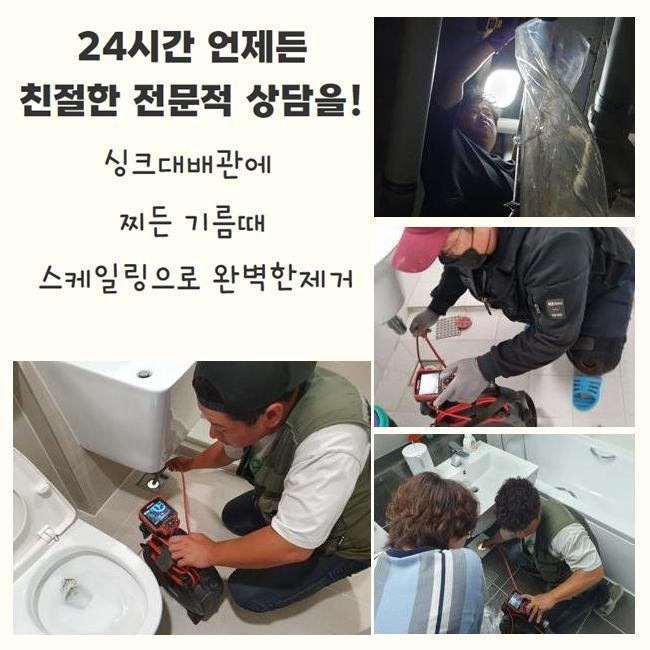
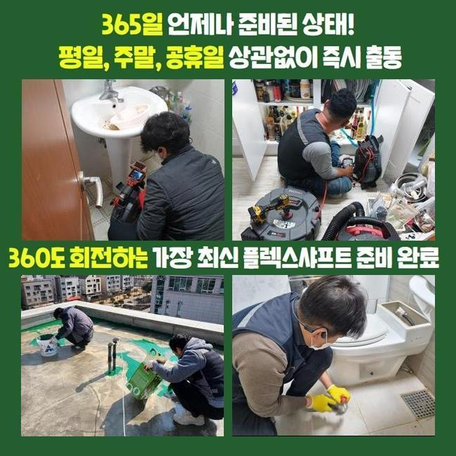
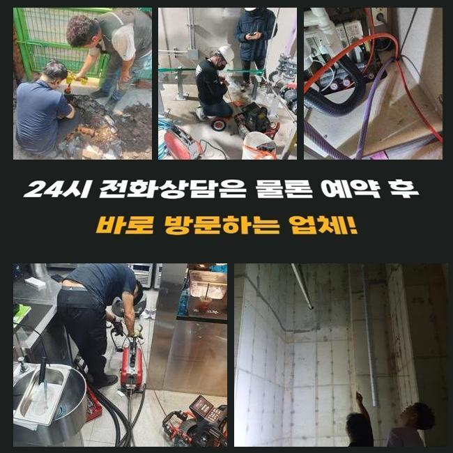
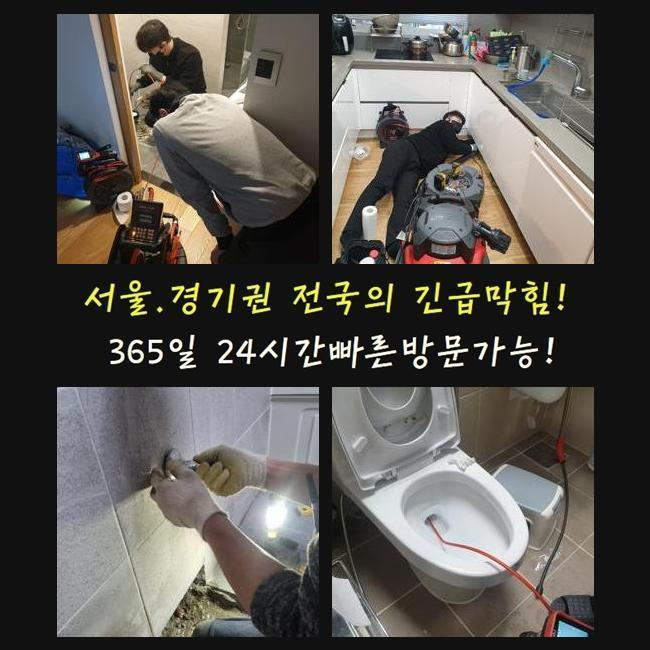

🏠 종로 창신동싱크대역류 궁정동 냄새차단 출장설비
용인 싱크대막힘 전문 시공 후기

📋 작업 개요
- 위치: 용인
- 서비스 유형: 싱크대막힘, 하수구막힘, 배관막힘, 집수정막힘, 역류해결, 배관청소, 설비공사, 악취차단
- 작업 일시: 2025. 2. 22. 23:17
- 업체명: 하수구수사대 (010-5615-2118)
🔍 문제 상황
종로 창신동싱크대역류 궁정동 냄새차단 출장설비
여러 가구가 모여있는 주택 내부 하수설비를 점검하지 않고 사용하면 노폐물이 층을 이루면서 배수라인의 이상이 나타날 확률이 높아요
사용하고 계시는 하수시설의 사용년수가 오래 되셨다면 주기적으로 하수구의 상태를 미리 파악하는게 안전합니다
이번에 출동한 현장은 의뢰인분께서 배수구가 막혀 역류가 발생한다고 전화주셨어요
의뢰받은 현장은 마을과는 떨어져서 외딴 지역의 다세대주택으로 주변에는 캠핑업체가 영업을 하고있는 상태였어요
주택을 지으신게 오래되지 않은 새집인데 건물 바깥쪽에서 역류사고가 자주 보인다고 하셨어요
확인해본 결과로는 창고 내부에 있는 집수정쪽에서 바깥에 있는 정화조로 흘러가게 되는 상황이였습니다
정화조 거리가 너무 멀어서 창고 안에 설치를 해야했다고 하셨어요
사례자님께 막힌지점을 찾아도 중간부분에 점검구가 없는 경우라면 생각보다 작업이 길어질 수 있다고 설명 해드렸더니 동의를 해주셨습니다
집수정에서 내시경기기를 진입시켰으나 침전물이 꽉 막혀있어서 진행방향으로 카메라가 들어가지 못했어요

🔎 원인 분석
💡 전문가 진단: 정밀 진단 장비를 사용하여 슬러지의 고착 여부를 판명하고 타격/세척 작업을 실시했습니다.
이물질이 가득하게 차있는걸 고객님께도 보여드리면서 자세하게 말씀드렸어요
샤프트장치로 수리를 진행했습니다
기기에 머리카락들과 물티슈들이 계속해서 걸려나왔어요
연립주택의 역류문제의 이유들은 머리카락과 물티슈가 흔하게 나와요
사례자님께 물티슈와 머리카락은 분리하여 배출하시라고 말씀 드렸어요
화학재질의 물티슈는 일반 휴지처럼 종이가 아니라 플라스틱 성질이므로 액체에 녹는게 아닙니다
요새 물에 녹는 물티슈도 있다고는 하지만 많은 양을 한번에 쓰는 경우 하수라인이 점차 막히면서 역류상황이 벌어지게 됩니다
하수라인 안에 있던 침전물과 섞여 슬러지화 되면서 막힘사고를 유발합니다
하수시설을 이용하실땐 물티슈와 작은 쓰레기 등은 따로 버리는 습관을 가져야해요
하수구는 하수를 처리하는 곳인걸 기억하셔서 이물질등은 분리배출을 원칙으로 하시길 바랍니다

🔧 작업 과정
이후엔 창고쪽으로 가서 내시경 작업을 이어갑니다
하수관이 매우 긴 경우라서 내시경기기계가 끝쪽까지 들어갈 수가 없어서 쏜드기기를 사용했어요
막힘이 추정되는 부위에 반복적으로 노폐물 제거하는 작업들을 계속했어요
앞에처럼 머리카락등의 이물질이 한가득 엉겨서 나오는걸 보시고나서 고객분께서도 심각함을 아시고 놀라셨습니다
저희 전문업체에 동일한 문제가 발생하지 않을 수 있는 사용법을 알려달라고 하셔서 안내 해드렸어요
보통 사용하시면서 작은 쓰레기 같은건 흘러가거나 물에 녹을 것이라고 하시지만 배수관이 꺾여있는 부분도 있고 내부에 노폐물도 있어서 녹지 않는 물티슈와 음식기름등을 따로 배출해서 버려야합니다
내시경기기를 활용해서 남은 찌꺼기는 없는지 확인했어요
정화조부부과 집수정부분 완벽하게 체크를 했고 찌꺼기 하나 없이 깔끔해진 하수관이 확인되어 작업을 마무리 했습니다
의뢰인에게도 보여드렸더니 다행이라고 하셨습니다
일반적으로 염산등을 부으면 쉽게 해결을 할 수 있다고 생각하고 실제로 해보는 분들이 있지만 그건 매우 위험합니다
의뢰인분께서 하수시설을 사용할때 이물질들을 따로 배출하며 집의 연식이 오래 되신 경우엔 사전에 업체를 통해서 주기를 정해두고 정기검진을 진행하시는걸 추천합니다
크게 신경을 쓰지않고 사용하시다가 역류상황이 일어나서 큰공사를 피할 수가 없어서 금액적으로 부담감이 상승하게 됩니다
이처럼 배수관 문제를 방치하시면 경제적으로 고객님의 부담감이 더해진다는 것을 잊지말고 미리 예방하셔야 해요
작업이 끝난 후에 최종적으로 점검하며 청소를 진행했습니다
오염된 물에서 부패된 냄새가 났으므로 특수한 세제를 도포하고 직접 호스를 끌고와서 대청소까지 완료했습니다
원래 이러한 현장에서 주변까지 저희 전문 기술진이 청소 해드리는 일은 많지 않았습니다


✅ 작업 완료
이번에 작업한 현장의 경우에 악취가 심해서 그냥 두고 올 수가 없었어요
저희 전문가는 하수라인의 물티슈등은 물론이고 하수설비 내부의 이물질들을 배출시켜 하수의 흐름 방향이 잘 나오는 것까지 최종확인을 반드시 진행합니다
고객분께서 저희 전문 기술진을 신뢰하여 의뢰를 주실 수 있게 최선을 다하며 비슷한 문제로 자세한 사항을 상담 받고 싶으시면 언제든지 연락주세요
하수시설의 문제점을 보다 더 합리적인 방식으로 해결하시려면 최대한 신속한 대응법이 베스트임을 잊지말고 미리 예방하셔야 해요
고객님께 위와 같은 문제현상이 안생기면 좋겠지만서도 문제가 의심된다면 조속히 전문업체에 의뢰를 하시기 바랍니다




⚠️ 주방 싱크대 배관 막힘 예방 수칙
- ✅ 기름기가 묻은 식기나 프라이팬은 설거지 전 키친타올로 반드시 기름때를 닦아내세요.
- ✅ 주기적으로 싱크대 개수대에 뜨거운 물을 가득 받아 한 번에 내려 배관 내부 기름을 씻어내세요.
- ✅ 배수구 거름망을 미세한 필터로 사용하시고 음식물 찌꺼기가 틈으로 새어 들지 않게 관리하세요.
- ✅ 베이킹소다와 식초를 뜨거운 물과 함께 일주일에 한 번씩 부어주면 배관 살균과 막힘 예방에 좋습니다.
💡 핵심 정리
- 확실한 장비 작업(내시경 점검 및 샤프트 스케일링)으로 원인을 뿌리 뽑습니다.
- 작업 후 1년 이내에 동일한 부위 재발 시 100% 무상 A/S 서비스를 보장합니다.
- 서울 · 경기 · 인천 전 지역에 24시간 언제든 긴급 출동할 수 있도록 항시 대기 중입니다.
❓ 자주 묻는 질문 (FAQ)
🚨 용인 싱크대막힘 문제로 고민이신가요?
정확한 원인 진단과 확실한 시공으로 재발 없는 해결을 약속드립니다.
24시간 긴급 출동 | 서울 · 경기 · 인천 전지역 | 1년 내 재발 시 무상 A/S